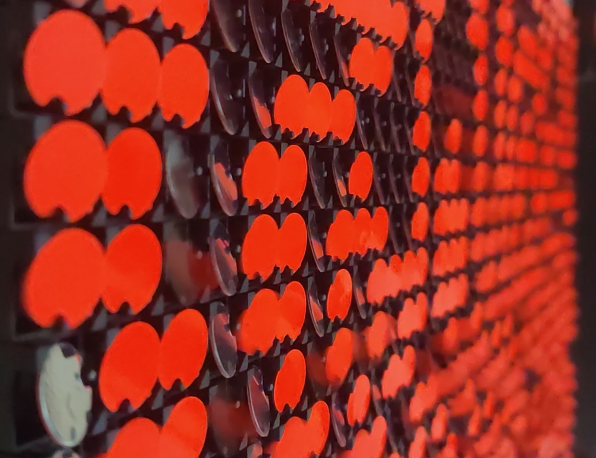

Flip Dots (WIP)
Kinetic / Interactive
The Flip-Dot Matrix is an electro-mechanical board that was commonly used for large-scale signages at airports and sports arenas before LED screens became popular. We were fortunate to get our hands on one of these, and ever since, we've been working to interface with them by sending our own data and animations to the board. Although it's still a work in progress, our ultimate goal is to use this technology to convert it into a kinetic, wall-mounted piece that can be easily installed in any location.
Video
Flip Dots (WIP)
Kinetic / Interactive
Collaborators
Photographs / Video
Dennis Peter
The Flip-Dot Matrix is an electro-mechanical board that was commonly used for large-scale signages at airports and sports arenas before LED screens became popular. We were fortunate to get our hands on one of these, and ever since, we've been working to interface with them by sending our own data and animations to the board. Although it's still a work in progress, our ultimate goal is to use this technology to convert it into a kinetic, wall-mounted piece that can be easily installed in any location.
We had been truly mesmerised by the functioning of the flip-dots ever since we saw it implemented as an art installation by "Breakfast Studio" - which popularized the usage of this technology in the art scene. We found out that it was manufactured by a company based out of Poland and we decided to get our hands on some of them to see how best we could implement something fun using them. The boards are modular and come in varying sizes - we picked up 3 boards with 14x28 dots each, giving us a total of 1,176 dots to work with.
The flip dots are essentially electromagnets that can switch on and off at an incredibly fast rate. The magnetic field created by them flips a magnetic disk that is fixed along a pivot (this can be seen in the video below). Since the dots are controlled by electromagnets that dont have any moving parts in them, they are much more durable than a lot of mechanical systems(that require motors/gears/moving parts).
While the manufacturer of the boards does provide a software to control the boards, while testing we figured out that the possibilities we could execute with this software were pretty limited. So, we began developing our own code for the hardware within the "processing" environment. Within processing, we were able to convert any pre-rendered/real-time animation into a bit-array and have the data transmitted to the boards via the TCP protocol. Additionally, the processing development environment also allowed us to integrate a kinect camera into the system and thus have the ability to cleanly track the silhouette of a person. The frame rates that we were able to achieve through this method were also much higher since the software that shipped with the boards could only be run on a raspberry pi. We are constantly tweaking the code and playing with other fun and interactive ideas that can be integrated into the system.
We had been truly mesmerised by the functioning of the flip-dots ever since we saw it implemented as an art installation by "Breakfast Studio" - which popularized the usage of this technology in the art scene. We found out that it was manufactured by a company based out of Poland and we decided to get our hands on some of them to see how best we could implement something fun using them. The boards are modular and come in varying sizes - we picked up 3 boards with 14x28 dots each, giving us a total of 1,176 dots to work with.
The flip dots are essentially electromagnets that can switch on and off at an incredibly fast rate. The magnetic field created by them flips a magnetic disk that is fixed along a pivot (this can be seen in the video below). Since the dots are controlled by electromagnets that dont have any moving parts in them, they are much more durable than a lot of mechanical systems(that require motors/gears/moving parts).
While the manufacturer of the boards does provide a software to control the boards, while testing we figured out that the possibilities we could execute with this software were pretty limited. So, we began developing our own code for the hardware within the "processing" environment. Within processing, we were able to convert any pre-rendered/real-time animation into a bit-array and have the data transmitted to the boards via the TCP protocol. Additionally, the processing development environment also allowed us to integrate a kinect camera into the system and thus have the ability to cleanly track the silhouette of a person. The frame rates that we were able to achieve through this method were also much higher since the software that shipped with the boards could only be run on a raspberry pi. We are constantly tweaking the code and playing with other fun and interactive ideas that can be integrated into the system.
Additional Credits:
Ksawery Kirklewski
Ksawery Kirklewski